要約
結論家族で、大分の代わりになる県はない。本命は本編v3の形（杉乃井1泊＋湯布院・夢想園1泊）のまま。ほかの県で意味があるのは、福岡（9/25に大分が取れなかったときの受け皿）と、鹿児島（冬の2回目）。父1人なら熊本（湯らっくす＋黒川温泉、60%引き）が最有力。
- 家族 ── 福岡は受け皿
- ▲5.5万福岡1泊＋湯布院1泊（案C）。本編（▲6.0万）とほぼ同じ割引で、別府の代わりにゆふいんの森と水族館。福岡の予算は大分の約2倍
- 家族 ── 冬の2回目
- ▲4.2万鹿児島2泊3日（1〜2月）。60%引きで2027年2月末まで。7県で唯一、年明けも割引が続く
- 父1人 ── 熊本
- ▲1.8万1泊2日の総額 約7.7万 → 約5.9万。熊本は予算が7県最大で、宿への直接予約がこれから増える
- 訂正 ── 大分の割引
- 11万→6万本編の「楽パックで約11万円引き」は、先行県のクーポンの形からみて我が家に合わない可能性が高い。宿泊のみで約6万円（下の囲み）
県別の判定
| 県 | 9/23 時点 | 家族で | 父1人で | 家族の割引 | 1人の割引 |
|---|---|---|---|---|---|
| 福岡 | 販売前 9/24 正午ごろ | ◯大分の受け皿・別ルート | ✕3月に行く | ▲2.0万 1泊 | ▲0.7万 |
| 佐賀 | 販売前 9/24 正午 | ✕車なしでは散らばる | △中身は最高。3月に行く | ▲2.0万 1泊 | ▲1.5万 |
| 長崎 | 第1弾完売 9/28 宿の直販 | △湯布院と両立しない | △ | ▲2.5万 1泊 | ▲1.3万 |
| 熊本 | 直販 拡大中 予算は7県最大 | △車があれば◯ | ◎最有力 | ▲4.8万 2泊 | ▲1.8万 |
| 鹿児島 | 販売前 10月中旬見込み | ◯冬の2回目 | ◯ | ▲4.2万 2泊 | ▲1.3万 |
| 宮崎 | 販売前 9/25 10:00 | △ | △ | ─ | ─ |
前提の訂正が3つあります（9/22版の大分メモを含む）
- ① 熊本・長崎は「終わって」いない。9/15に売り切れたのは、楽天・じゃらんに割り当てられた最初の枠だけでした。熊本は県の担当者が「予算はまだまだあります」と説明し、宿への直接予約を約300施設から約1,100施設へ順次広げる予定です。長崎は9/28（月）10:00から宿の直接予約、9/30から旅行会社と他の予約サイトが始まります。
- ② 宿泊のみの上限は「1人1泊2万円」ではなく「1人1旅行2万円」。楽天の2泊用クーポンは、上限が1人1泊1万円です。さらに楽天の交通付き（楽パック）2泊以上のクーポンは、「1名3万円」「2名6万円」の定額型しかなく、枚数も県あたり数十枚（熊本80枚・長崎60枚・佐賀25枚）でした。9/22版で私が「楽天の国内ツアーなら1人3万円×4人＝12万円」と書いたのは誤りです。申し訳ありません。本日のv3（楽パックで確定する案）にもこの前提が残っていたため、大分メモをv3.1として直しました。有料3名（大人2＋4歳）の我が家に合うクーポンがあるかは、9/25の12時直前に分かります。
- ③ 子どもは予約の人数に入れれば「1名」。福岡・佐賀・長崎・熊本の各県が明記しています。じゃらんでは予約の宿泊人数に入れることが条件です。
9/25の動き方が変わります。楽パックで確定するのは、3名以上で使えるクーポンがある場合だけ。なければ最初から「宿泊のみ」で夢想園と杉乃井を1件ずつ取り、航空券は別に買います。どちらでも割引は約6万円で、ほとんど変わりません（第Ⅹ章）。
7県はいまどうなっているか
9/23 時点(1) 割引の効く期間と販売開始日
読み取ってほしいのは2点です。福岡は12/15で終わり、7県でいちばん短い（11/20泊は間に合う）。鹿児島だけが2027年2月末まで続く（12/26〜1/3は除く）。3月の三十路会は、どの県の期間にも入りません。
(2) 県ごとの中身
| 県 | 割引率 | 対象宿泊 | 販売の入口 | 予算 | いまの状態 |
|---|---|---|---|---|---|
| 熊本 | 60% | 10/1–12/25 | OTA 9/15〜／宿の直販は準備ができた宿から順次／旅行会社は予定 | 68.7億円 | 楽天・じゃらんは開始30分以内に上限。キャンセル分の再販売も約5分で終了。県の担当者は「まだまだあります」、OTAへの配分は「ほんの一部」 |
| 長崎 | 50% | 10/1–12/25 | OTA第1弾 9/15（12/1チェックアウト分まで）／宿の直販 9/28 10:00／旅行会社・他OTA 9/30〜／12月分のOTAは11月中旬〜 | 10.0億円 | OTA第1弾は10〜20分で完売。県の担当者は「予約が取れない方は出てくる」 |
| 福岡 | 50% | 10/1–12/15 | 9/24 正午ごろ〜。OTA・県内旅行会社・宿の直販（現地払いのみ）。準備が整った事業者から順次 | 19.6億円 | 9/23時点でOTAのバナーは未公開。じゃらんの福岡欄は「準備中」 |
| 佐賀 | 50% | 10/1–12/25 | OTA 9/24 正午／旅行会社 10/2／宿の直販 10月上旬 | 2.3億円 | 7県で最少。楽天のクーポンは全部で740枚 |
| 大分 | 50% | 10/1–12/25 | OTA 9/25 12:00（楽天・じゃらん・一休・Yahoo!）／旅行会社 10/9／宿の直販 10/16 | 10.8億円 | 未開始。10月前半の宿泊を割引で取れるのはOTAだけ |
| 宮崎 | 50% | 10/1–12/25 | OTA 9/25 10:00（大分より2時間早い）／宿・旅行会社 9/28〜 | 7.9億円 | 未開始。1月からは県独自の「ひなタビ」第2期（詳細は11月以降） |
| 鹿児島 | 60% | 10月中旬–2027/2/28 12/26–1/3は除く | 10月中旬の見込み。宿の直販・県内旅行会社・OTA（楽天・じゃらん・Yahoo!・一休） | 30.2億円 | 開始日の正式発表は10月上旬以降。予算は10/9の県議会で採決の見通し |
割引はいくらになるのか
計算のルール(1) 式はひとつだけ
割引額 ＝ 宿泊代 × 50%（熊本・鹿児島は60%）。ただし1予約あたり「2万円 × 人数」が上限。
航空券は割引されない前提で考える。交通付きのクーポンは定額で枚数が数十枚しかなく、当てにできないため。
(2) 家族4人と1人で、効き方が違う
- 上限にはまず届かない。1泊16万円の宿でようやく8万円に当たる
- だから宿代の半分（熊本・鹿児島は6割）がそのまま引かれると考えてよい
- 1泊ずつ別々に予約しても、2泊まとめても、割引額はほぼ変わらない
ただし航空券（大人2＋4歳で往復6〜9万円）には効かないので、総額に対しては1〜2割台になる。
- 50%の県では宿代4万円、60%の県では約3.3万円を超えると上限に当たる
- 1泊2〜3万円の宿なら、割引は1〜1.8万円
- 楽天の1泊用クーポンなら上限2万円。2泊用は1泊1万円まで
往復の航空券（2〜3万円）がそのまま残るので、1人旅の割引は総額の2割前後にとどまる。
(3) 総額のうち、割引はどれくらいか（家族4人）
総額＝宿泊＋航空券（大人2人と4歳。4歳の運賃は大人の75%と仮定、2歳は膝の上で無料）＋現地の入場料・食事・交通。自宅⇔羽田は含めていない。宿泊代は1泊あたり、杉乃井5万・湯布院（夢想園）7万・福岡4万・唐津4万・長崎5万・天草5万・熊本市3万・指宿4.5万・鹿児島市2.5万円と置いた。本編のレンタカー代1.5万円も含む。実際の料金は見ていない。
「割引があるから行く」にはならない
家族旅行の割引は、いちばん大きい案でも約6万円。1人旅なら1〜2万円です。これは「行くと決めた旅が2割ほど安くなる」という大きさで、行く理由そのものにはなりません。各県の価値は、下の章で中身から判定しています。
福岡県
湯布院への入口
- 対象宿泊
- 10/1 – 12/15（7県で最短。11/20泊は間に合う）
- 予算
- 19.6億円（熊本・鹿児島に次ぐ3番目）
- 羽田から
- 1時間45〜55分。1日60便以上。11月の週末で片道13,090円〜
- 地震
- 観光施設は概ね平常どおり（観光庁）
単独で行く県ではない。9/25に大分が取れなかったときの受け皿、またはゆふいんの森で湯布院に入る別ルートとして効く。
(1) 家族で行くなら ── 福岡から入り、ゆふいんの森で湯布院へ
11/20（金）– 22（日）2泊3日 ／ 案C
福岡1泊＋湯布院1泊
- DAY1 金7:05 羽田 → 8:50 福岡（JAL305。9/23時点のダイヤ）→ 地下鉄で博多、ベイサイドプレイスから高速船うみなかラインで海の中道へ（約20分）船 大人1,300円・幼児は大人1人につき1人無料
- 11:00マリンワールド海の中道。アザラシの餌やり（毎日・3歳以上・500円）。隣の海の中道「動物の森」でモルモット、ヤギ・ヒツジの餌やり（1個100円）水族館 大人2,500円・3歳以上700円・3歳未満無料／動物の森 大人450円・中学生以下無料。イルカの餌やりとサメタッチは土日祝のみで、金曜は不可
- 夕方JRで博多へ（約30分）→ 博多泊（福岡の割引）
- DAY2 土9:17 ゆふいんの森1号 → 11:31 由布院。前面展望、ビュッフェ、記念撮影大人5,600円（ネットきっぷ）。幼児は膝の上なら無料。乗車1か月前の10:00発売＝10/21。ボックス席は駅の窓口のみ
- 午後本編と同じ。湯布院フローラルヴィレッジでフクロウを腕に乗せる → 湯の坪街道 → 金鱗湖 → 夢想園などの湯布院の宿（大分の割引）フクロウの森 大人700円・子ども500円。9/12版の本編にあった「釣り堀フィッシングゆふ」は閉業していた
- DAY3 日金鱗湖の朝霧 → 由布院でレンタカー → アフリカンサファリ（ジャングルバス）→ 大分空港で返却 → 16:50 / 17:20発で羽田。3日目は本編と同じ湯布院の店で借りて大分空港へ乗り捨て（乗り捨て料 約6,500円の例）。車を使わないなら、由布院から直行バスで空港へ（約55分・1,550円）
| 項目 | 金額（推定） | 応援割 | メモ |
|---|---|---|---|
| 福岡の宿 1泊（4人1室） | 4.0万 | ▲2.0万 | 9/24に福岡の枠で |
| 湯布院の宿 1泊2食 | 7.0万 | ▲3.5万 | 9/25に大分の枠で |
| 航空券 羽田→福岡・大分→羽田 | 8.0万 | ─ | 割引なし |
| ゆふいんの森・入場料・食事・バス | 5.4万 | ─ | |
| レンタカー（3日目・乗り捨て） | 1.2万 | ─ | |
| 合計 | 25.6万 | ▲5.5万 | 払う額 約20.1万 |
同じ置き方で本編（杉乃井1泊＋夢想園1泊・2〜3日目レンタカー・宿泊のみ）を計算すると約19.8万（▲6.0万）。差は数千円で、選ぶ基準はお金ではなく中身になる（第Ⅸ章）。
(2) 父1人で行くなら
博多・天神 1泊2日
▲0.7万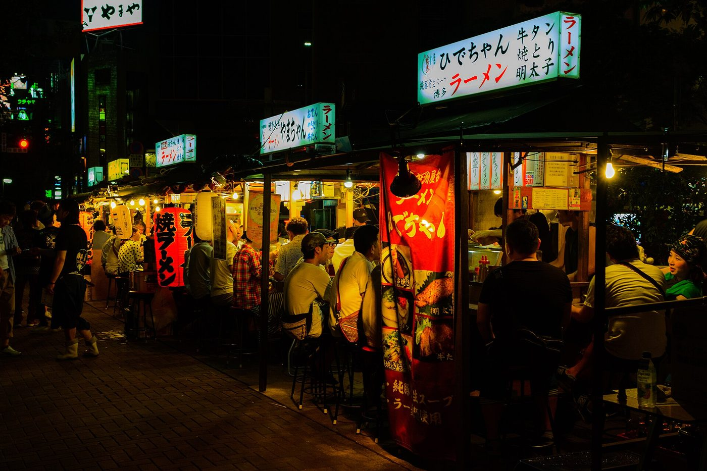
- 筑紫野 天拝の郷：露天から宝満山を一望、セルフロウリュのサウナ、水風呂2種（14〜17℃／18〜20℃）。1,090円
- サウナヨーガン福岡天神：100℃の溶岩サウナ、屋上の外気浴。1,900〜2,100円
- 総額 約5.2万（航空券2.8万・宿1.4万・現地1.0万）→ 割引後 約4.5万
不要と判定。2027年3月21日の三十路会で、天神のカンデオ（スカイスパ）・中洲の屋台・もつ鍋を回る予定になっている。半年前に同じことをしに行く理由がない。
(3) 判定
大分の受け皿・別ルートとして価値がある。本編の形が組み上がっているので、置き換えるほどではない。ただし①9/25に大分の宿が取れなかった場合（福岡の予算19.6億円は大分の約2倍で、枠が長く残る見込み）、②次男をゆふいんの森に乗せたい場合は、案Cが有力になる。単独（1泊2日で総額約14万→約12万）なら△。
3月の三十路会と重なる。割引も1万円未満。
佐賀県
父1人なら九州一。ただし3月に行く
- 対象宿泊
- 10/1 – 12/25（楽天の予約受付は12/21まで）
- 予算
- 2.3億円（7県で最少）。楽天のクーポンは全部で740枚
- 販売
- OTA 9/24／旅行会社 10/2／宿の直販 10月上旬
- 羽田から
- 佐賀空港はANAのみ1日5便（片道13,890円〜）。空港と博多を結ぶバスは休止中なので、福岡空港から入るのが現実的
中身は父1人向けに偏っている。家族で行く県ではなく、父の本命は3月に予約済み。
(1) 家族で行くなら ── 唐津・呼子
1泊2日
▲2.0万


- DAY1羽田 → 福岡 → 地下鉄から直通の筑肥線で唐津（約1.5時間）→ バス40分で呼子。海中展望船ジーラ（40分）とイカの活き造りジーラ 大人2,200円・小学生1,100円・幼児は大人1人につき1人無料／活き造り定食 3,480円前後
- 夜唐津泊。唐津シーサイドホテルなら屋上に天然温泉のインフィニティ露天とサウナ（宿泊料金は未確認）
- DAY2仮屋湾遊漁センター（屋根とトイレのあるイカダの海上釣り堀。真鯛・青物以外は釣り放題）→ 博多 → 羽田入場500円（小学生以上）・2時間 大人3,000円〜・高校生以下2,000円〜・貸し竿500円。木曜休み。唐津からバス約40分
総額 約14.7万（宿4.0万・航空券7.7万・現地3.0万）→ 割引後 約12.7万（▲2.0万、14%）。泊まりを嬉野の初音荘（子連れ特化・大人1人につき未就学児1人の食事無料・お風呂は畳敷き）にする手もある。
弱点。唐津・呼子・嬉野・武雄が互いに離れていて、車なしでは1泊で1エリアしか回れない。父が一番行きたい御船山楽園ホテルは小学生以上しか泊まれない。
(2) 父1人で行くなら ── らかんの湯
武雄温泉 1泊2日
▲1.5万
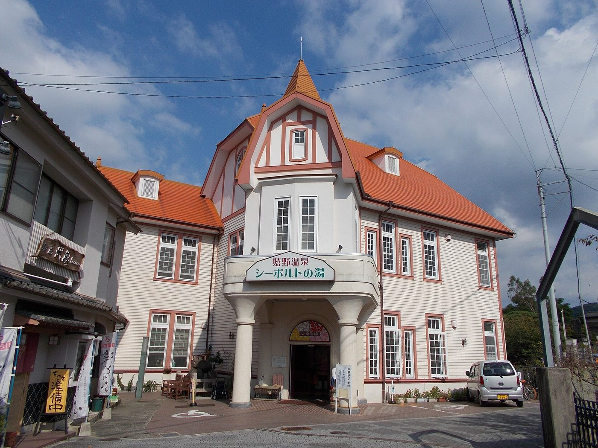
- 御船山楽園ホテル「らかんの湯」：薪サウナ（セルフロウリュ）、屋外の水風呂16℃・深さ120cm、外気浴。サウナシュラン3年連続1位で殿堂入り。宿泊者は無料、男女入れ替えで両方に入れる
- 日帰りも可：2.5時間 4,250〜5,450円・5部制・2か月前から予約
- 総額 約6.8万（航空券と特急3.0万・宿3.0万・現地0.8万）→ 割引後 約5.3万
三十路会（2027年3月20–22日）は割引の対象外
佐賀は12/25、福岡は12/15で終わるため、3月の三十路会には使えません。仮に12/15以前へ前倒しすると、らかんの湯（▲2万）とカンデオ（▲1.2万）で1人約3.2万円、5人で約16万円安くなる計算です。ただしカンデオは予約済みで取り直しが必要、桜の時期を手放す、メンバーの日程を組み直す、佐賀の枠は7県最少の4点から、動かす理由にはならないと判断しました。
(3) 判定
羽田便が少なく、見どころが散らばり、目玉の宿に子連れで泊まれない。大分を上回る点がない。
中身は九州一だが、3月に同じ宿へ泊まる。今行くなら、らかんの湯ではなく嬉野の河畔サウナなど別の目的が要る。
長崎県
終わっていない。ただし湯布院と両立しない- 対象宿泊
- 10/1 – 12/25
- これから
- 宿の直販 9/28（月）10:00〜／旅行会社・他OTA 9/30〜／12月分の楽天・じゃらん 11月中旬〜
- 予算
- 10.0億円。販売の入口ごとに予算を確保
- 羽田から
- 1時間45〜55分。11/20・22は片道15,760円〜
子ども向けの中身は厚い。ただ大分と同じ週末には並べられないので、今年は見送りが妥当。
(1) 家族で行くなら ── ハウステンボスと九十九島
1泊2日（土日祝）
▲2.5万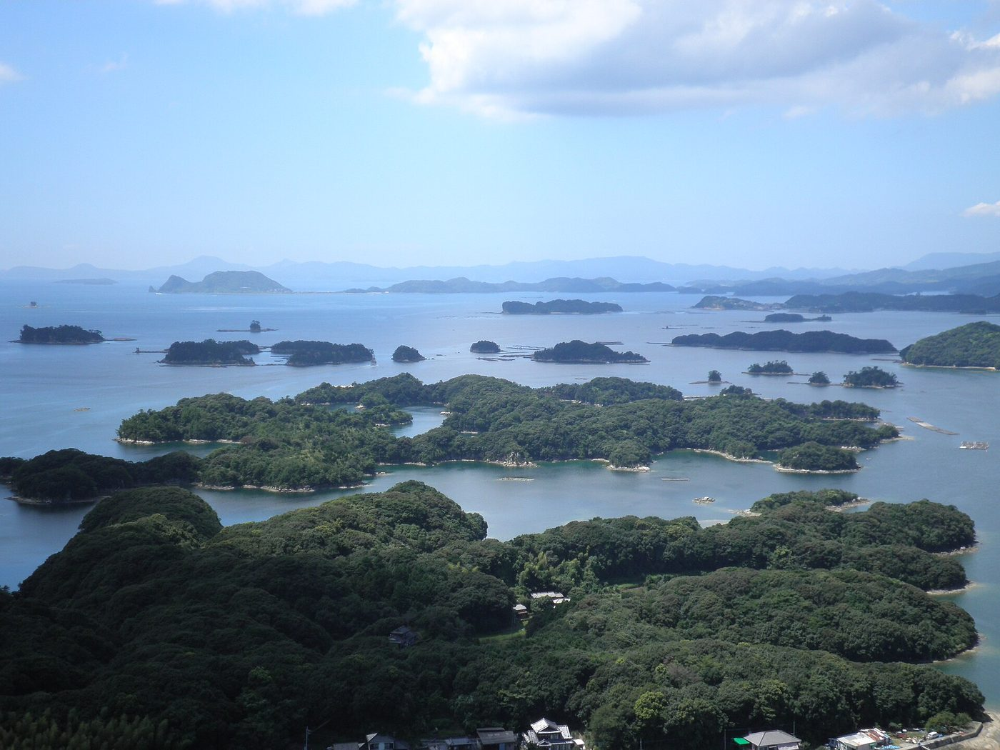
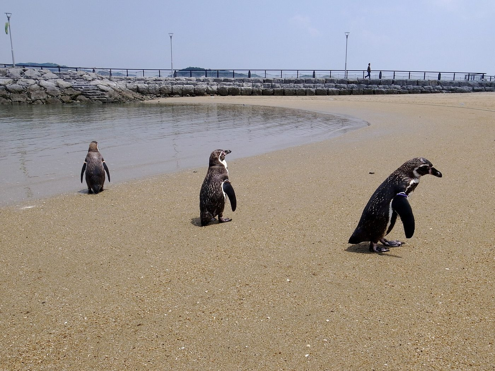
- DAY17:05 羽田 → 8:55 長崎 → 10:30 高速船でハウステンボス（約50分・土日祝のみ）→ ハウステンボス1日。ミッフィー・ワンダースクエア、運河のクルーザー。11/6からクリスマス高速船 大人2,500円・小人1,250円・幼児は大人1人につき1人無料／1DAY 大人7,600円〜・4歳以上の未就学児3,800円〜・3歳以下無料
- DAY2九十九島パールシーリゾート。遊覧船、水族館「海きらら」、動植物園「森きらら」でキリンのおやつ（土日祝11:10〜・200円）と対州馬の乗馬（土日祝14:00〜・3歳〜・300円）→ 長崎空港 → 羽田
総額 約17.8万（宿5.0万・航空券8.8万・現地4.0万）→ 割引後 約15.3万（▲2.5万、14%）。
弱点。確実に釣れる釣り堀は車が必要（佐世保のジャンボフィッシング村）。軍艦島クルーズは2歳が乗れない。バイオパークのザリガニ釣りは10/31で終了。ハウステンボス直営ホテルの10〜11月分の割引は販売終了。
(2) 父1人で行くなら
長崎市・雲仙 1泊2日
▲1.3万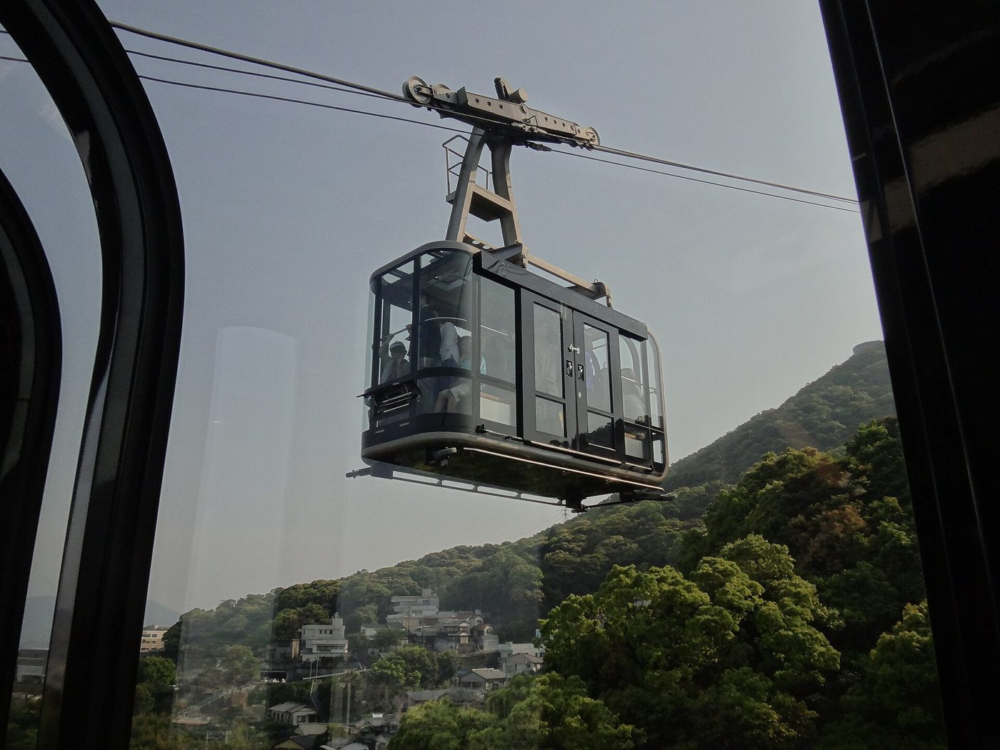
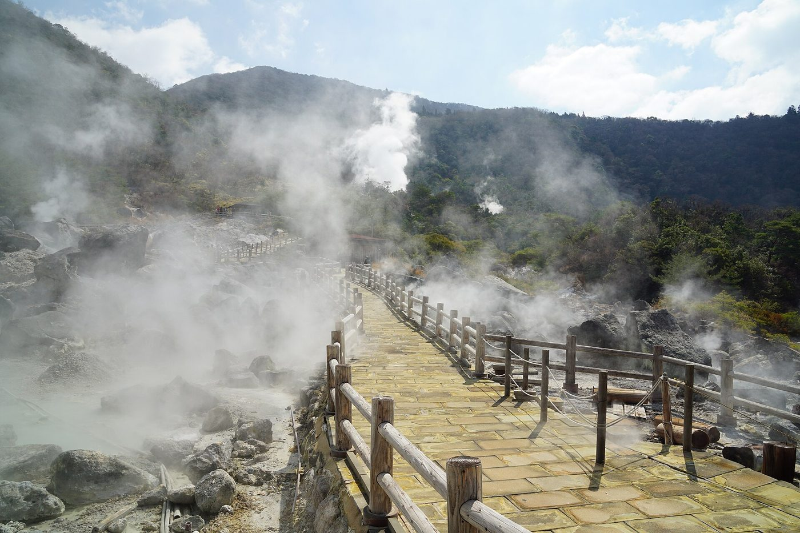
- 稲佐山温泉ふくの湯：夜景の見える露天、2種類のロウリュ、外気浴。長崎駅から無料送迎（料金未確認・現金のみ）
- アクティビティプラネット雲仙：清流をそのまま水風呂にするテントサウナ。4,350円〜
- 総額 約6.9万（航空券3.2万・宿2.5万・現地1.2万）→ 割引後 約5.7万
(3) 判定
船・ペンギン・キリン・遊園地と中身は大分に負けない。ただし湯布院の代わりにはならず、釣りは車頼み。行くなら来年以降、割引とは切り離して検討すればよい。
テントサウナは魅力だが、熊本（60%・湯らっくす・黒川）に比べて決め手が弱い。
熊本県
7県でいちばん「まだ取れる」- 対象宿泊
- 10/1 – 12/25
- 予算
- 68.7億円。国の総額の5割弱で7県最大。楽天・じゃらんへの配分は「ほんの一部」
- これから
- 宿の直販を約300→約1,100施設へ順次拡大。旅行会社での販売も予定（いずれも日付は未発表）
- 地震
- 熊本城（9/18時点で通常営業）・阿蘇（火口見学以外）・天草・黒川は営業。宇城・氷川・八代は観光では避ける
- 羽田から
- 始発6:20→8:00着。11/20–22は片道16,190円〜
「終わった県」ではなく、これから宿の直販で取れる県。父1人なら第一候補。
(1) 家族で行くなら ── 天草でイルカと釣り堀
2泊3日（レンタカー）
▲4.8万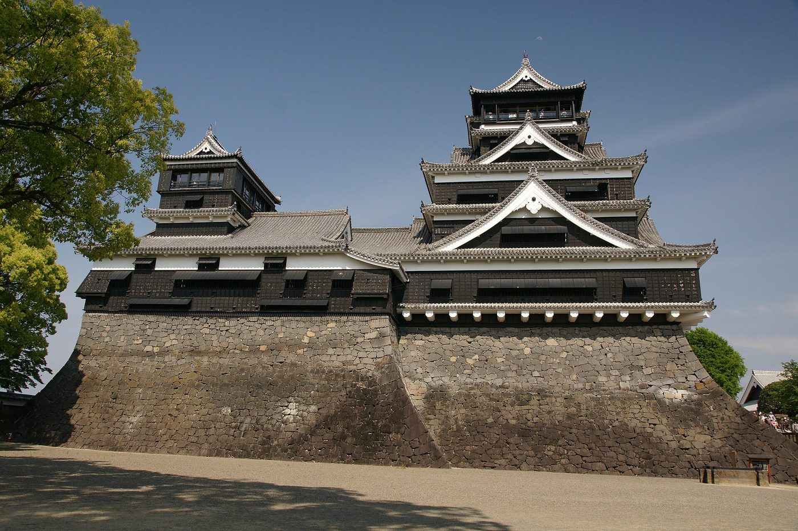
- DAY16:20 羽田 → 8:00 熊本。レンタカー（チャイルドシート2台）→ 熊本城 → 熊本市内泊
- DAY2車で天草・五和町へ（約2〜2.5時間）→ 天草観光ドルフィンクルーズ：野生のイルカ約50分と、同じ場所の釣り堀1時間のセット → 天草泊セット 大人4,700円・子ども3,300円・幼児（2歳以上）2,400円。当日予約可
- DAY3上天草の海中水族館シードーナツ（イルカとハイタッチ）→ 熊本空港 → 羽田
総額 約24.0万（宿8.0万・航空券9.1万・レンタカー2.5万・現地4.4万）→ 割引後 約19.2万（▲4.8万、20%）。車を使わないなら、上天草のシークルーズ（約2時間、イルカに会えなければ1年有効の無料乗船券）を特急「A列車で行こう」と天草宝島ラインで。
長男への刺さり方は7県で最強。「生き物」「確実に釣りたい」「船」が1か所でそろう。ケアンズで果たせなかった「釣れた」を、イルカと同じ日に回収できる。
弱点。熊本市から五和まで車で2時間以上、しかも震源に近い宇城市を通る。湯布院には行けない。
(2) 父1人で行くなら ── 湯らっくす と 黒川温泉
1泊2日
▲1.8万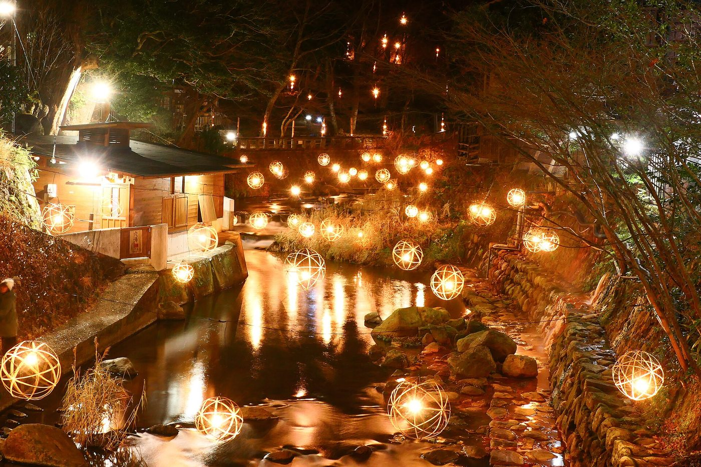
- DAY16:20 羽田 → 8:00 熊本 → リムジンバスで市内（約50分）→ サウナと天然温泉 湯らっくす：深さ171cmの水風呂と「MADMAXボタン」、毎時のアウフグース、外気浴入浴 平日900円・土日祝1,000円。24時間営業。11/16（月）10時〜11/20（金）17時はメンテナンス休館
- 午後九州横断バスで黒川へ（要予約・約150分）→ 黒川の宿（応援割参加：いこい旅館・やまびこ旅館・奥の湯・美里・黒川荘など）
- DAY2入湯手形で露天3か所 → バスで熊本空港 → 羽田
総額 約7.7万（航空券3.3万・宿3.0万・バスと入浴1.4万）→ 割引後 約5.9万（▲1.8万、24%）。60%なので、同じ宿代でも50%の県より3,000円多く引かれる。湯らっくすのドミトリー（4,800円〜）に泊まれば宿代そのものが小さい（応援割の対象かは未確認）。
要確認。九州横断バスの運行状況（地震後に減便していた時期がある）。楽天・じゃらんは停止中なので、県の特設サイトの参加宿一覧から宿に直接予約する形になる。
(3) 判定
天草は長男にとって最高の中身。ただし車が前提で移動が長く、湯布院とも両立しない。運転に抵抗がなければ◯。
最有力。全国屈指のサウナと露天の聖地が1泊で両方回れて、60%引き、予算も7県最大。10月か12月前半に（11/16–20の休館と11/20–22の家族旅行を避けて）。
鹿児島県
年明けも使える唯一の県- 対象宿泊
- 10月中旬 – 2027/2/28（12/26–1/3は除く）
- 予算
- 30.2億円（10/9の県議会で採決の見通し）
- 販売
- 宿の直販・県内旅行会社・OTA（楽天・じゃらん・Yahoo!・一休）。開始日の正式発表は10月上旬以降
- 羽田から
- 1時間40〜50分。1〜2月は片道8,500円〜（最安の表示）
- 桜島
- 噴火警戒レベル3（火口から約2km）。冬は北西風で、灰は市街地の反対側に流れやすい
11月の大分と重ならない時期に、60%で行ける。家族の2回目にも父1人にも効く。
(1) 家族で行くなら ── 冬の2泊3日
2/21（日）– 23（火・祝）など
▲4.2万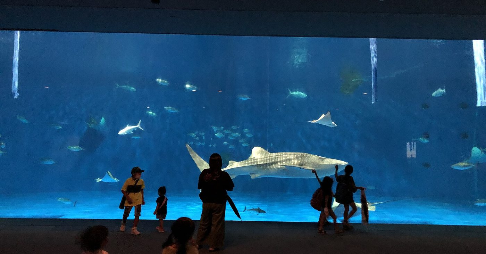
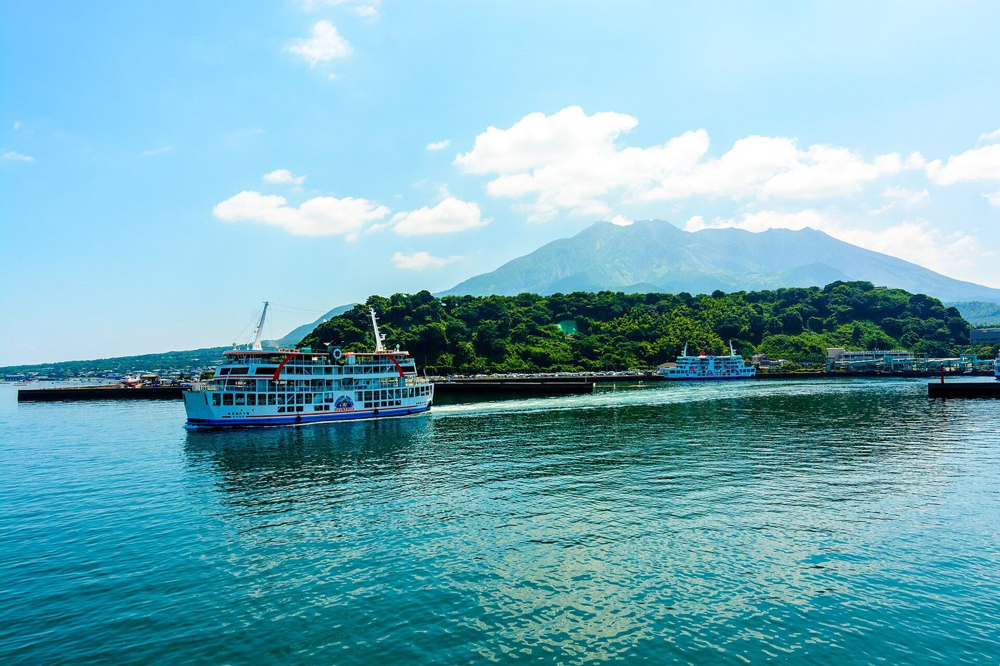
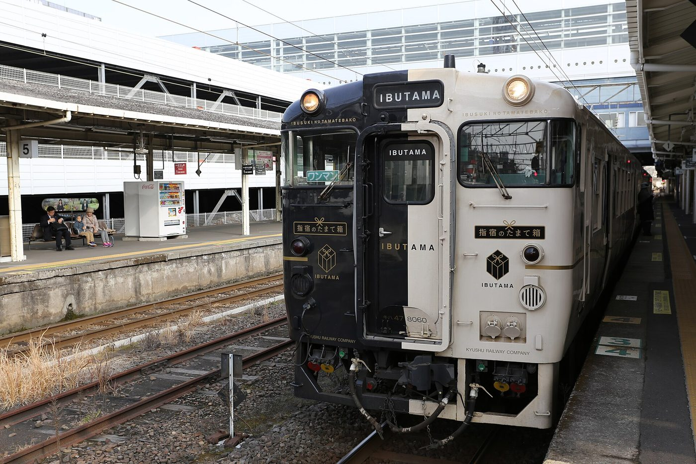
- DAY1羽田 → 鹿児島 → バスで市内（40〜55分）→ いおワールド（タッチの時間10:45〜16:15）→ 桜島フェリー → 溶岩なぎさ公園の足湯（全長約100m・無料）→ 市内泊
- DAY2指宿のたまて箱で指宿へ（約51分）→ 長崎鼻パーキングガーデン：インコを手に乗せる、白鳥・ヤギの餌やり → 指宿白水館（砂むし・プール）たまて箱 大人2,950円・1か月前10:00発売。2026年12月以降の運転日は10月中旬発表／パーキングガーデン 大人1,200円・4歳以上600円
- DAY3指宿 → 鹿児島中央 → 空港 → 羽田。2/23は天皇誕生日で、帰った翌日は平日
総額 約18.0万（宿7.0万・航空券6.1万・現地4.9万）→ 割引後 約13.8万（▲4.2万、23%）。家族の2泊3日では、比べた案の中でいちばん安い。冬の航空券が安く、割引が60%だから。
弱点。「確実に釣れる」管理釣り場が市内になく、郊外は車が必要（指宿の鱒乃家は冬の営業が未確認）。空港から市内まで40〜55分。
(2) 父1人で行くなら ── 砂むしと温泉銭湯
1泊2日（1〜2月）
▲1.3万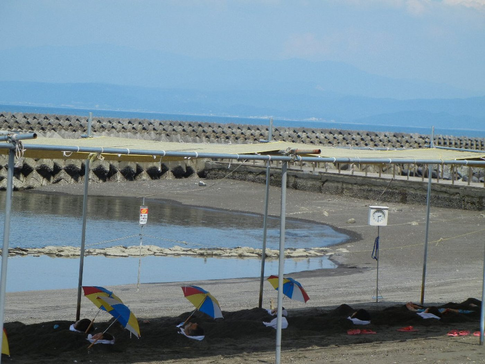
- たまて箱で指宿 → 砂むし → 指宿泊 → 翌日、市内の温泉銭湯（ほぼすべてが温泉・460円）。たぬき湯は露天＋洞窟サウナ＋外気浴
- 黒豚しゃぶと焼酎。2泊にするなら霧島（硫黄谷の14源泉・日帰り1,200円）も入る
- 総額 約5.7万（航空券2.2万・宿2.2万・現地1.3万）→ 割引後 約4.4万（▲1.3万）
(3) 判定
冬の2回目として十分。水族館・フェリー・観光列車が車なしでつながる。湯布院の代わりではなく、大分の「次」。
熊本に次ぐ。熊本が12/25で終わるので、年明けに1人で行くならこちら。
宮崎について。OTAは9/25の10:00開始（大分より2時間早い）、12/25まで、50%。フェニックス自然動物園（遊園地の9機種乗り放題）や青島はあるが、鹿児島より優先する材料は見つからなかった。熊本か鹿児島と組み合わせた周遊商品なら60%になるが、扱う旅行会社を確認できていない。
組み合わせるなら
大分の本命にどう足すか(1) 11月の大分に、福岡を足すかどうか
| 形 | 泊まる場所 | 中身 | 手放すもの | 割引 | 払う額 | 予約の機会 |
|---|---|---|---|---|---|---|
| 本編 v3.1 大分だけ | 杉乃井 1泊 ＋夢想園 1泊 | ホーバークラフト、うみたまご、高崎山、棚湯・アクアガーデン、地獄めぐり、フクロウ、サファリ | ─ | ▲6.0万 | 19.8万 | 9/25 に2件（宿泊のみの場合） |
| 案C 福岡から入る | 福岡 1泊 ＋湯布院 1泊 | マリンワールド、動物の森、高速船、ゆふいんの森、フクロウ、サファリ | ホーバークラフト、うみたまご、高崎山、杉乃井（父の棚湯、母子のアクアガーデン）、地獄めぐり | ▲5.5万 | 20.1万 | 9/24 と 9/25 に1件ずつ |
決め方の提案
本編のままでよい。大分側の中身（ホーバークラフト・高崎山・うみたまご・杉乃井）は、福岡の水族館とゆふいんの森を足しても置き換えられないほど厚い。
福岡が効くのは2つの場合だけです。①9/25に夢想園か杉乃井が取れなかったときは、取れなかった夜を福岡に替えて案Cにする（福岡は9/24から始まり、予算が大分の約2倍なので枠が残りやすい）。②次男をどうしてもゆふいんの森に乗せたいときは、9/24正午に福岡の宿を取って案Cで行く。
(2) 半年の並べ方
- 10月／12月前半父1人・熊本（湯らっくす＋黒川）60%。湯らっくすの休館（11/16–20）と家族旅行（11/20–22）を外す。熊本は12/25まで
- 11/20–22家族・大分（本編v3.1。受け皿は案C）本命。予約は9/25（大分）。案Cにするなら9/24（福岡）も
- 2027年1–2月家族・鹿児島 または 父1人・鹿児島60%・2/28まで。候補は1/10–11（日・月祝）、2/21–23（日〜火祝）
- 2027/3/20–22三十路会（佐賀・福岡）割引の対象外。予定どおりでよい
父1人の旅は、その間に妻が1人で子ども2人を見ることになり、土曜なら習い事の送迎も重なります。割引額（1〜2万円）より、この負担のほうが大きいかもしれません。行くなら、妻の1人時間とセットで相談するのがよさそうです。
次にやること
9/23 → 10月- 今日 9/23本編のままか、案C（福岡から入る）にするかを決める迷うなら本編のまま。案Cは「ゆふいんの森に乗せたい」ときの選択肢。
- 9/24 12:00ごろ福岡：案Cなら11/20の福岡の宿を「宿泊のみ」で取る。本編なら見るだけ子ども2人を宿泊人数に入れる。福岡のOTA名は9/23時点で未公開なので、正午前に県のキャンペーンサイトで確認。本編の場合は、楽天で楽パック2泊以上のクーポンが何名用まであるかを見ておく（翌日の大分の形が読める）。
- 9/25 12:00大分：3名以上用の楽パッククーポンがあれば楽パック。なければ宿泊のみで夢想園 → 杉乃井11:50にクーポン一覧を見て決める。宿泊のみは、じゃらんならクーポンの獲得が要らず予約画面の同意チェックだけ。楽天なら1泊用クーポン（上限1人1泊2万円）を先に獲得。部屋数の少ない夢想園を先に。どちらかが取れなければ、その夜を福岡に替えて案Cへ。宮崎は同じ日の10:00開始（使わない）。
- 9/25 宿の確定後（宿泊のみで取った場合）航空券を買う早いほど安い。本編は羽田⇔大分の往復、案Cは羽田→福岡と大分→羽田の片道を2本。
- 9/28 10:00（長崎を考えるなら）宿の直販が始まる今回は見送りの判定。
- 10月上旬鹿児島の開始日の発表を確認する10/9に県議会で採決。冬の2回目を考えるなら、ここで日程を決める。
- 10/21 10:00（案C）ゆふいんの森1号・11/21乗車分の発売乗車1か月前の10:00。ボックス席は駅の窓口のみ。
- 随時（父1人・熊本）黒川の参加宿へ直接予約県の特設サイトの宿泊施設一覧から。楽天・じゃらんの再開も随時あり得る。
まだ分かっていないこと
- 大分の楽天クーポンの種類：熊本・長崎・佐賀と同じ形（宿泊1泊・2泊、楽パック1名・2名）か。3名以上用の楽パッククーポンがあれば、本編の楽パック案が生きる。9/25に公開
- 福岡の参加OTA：9/23時点でバナーが未公開。9/24正午にどのサイトで売り出すか
- 実際の宿泊料金・航空券：本資料の金額はすべて置いた値。11月の冬ダイヤ、4歳の運賃も未確認
- 熊本の直販の開始時期、九州横断バスの運行状況、黒川の1人泊料金
- 周遊型（上限3.5万円）を売る旅行会社：楽天・じゃらんは対象外で、扱う会社は見つからなかった
- 鹿児島の正式な開始日と、指宿のたまて箱の12月以降の運転日（10月中旬発表）
出典
確認日 2026/9/23- 観光庁「九州ふっこう応援割」（2026/9/18更新）── 割引率・上限・各県の状況 mlit.go.jp/kankocho/page13_00002.html
- 九州ふっこう応援割お知らせサイト（九州観光機構） fightkyushu.welcomekyushu.jp
- 福岡県 ふくおかキャンペーン 公式サイト・FAQ・事業者向けFAQ・要項（9/18）── 9/24正午ごろ開始、12/15まで、利用回数の制限なし、無料の幼児も人数に含む fukuoka-fukkou-wari.jp
- 佐賀県 さがキャンペーン 公式サイト・FAQ（9/18）、佐賀県プレスリリース（9/11） saga-ouen.jp ／ pref.saga.lg.jp
- 長崎県 ながさきキャンペーン 公式サイト・FAQ・要領（9/18）── 9/28施設直販、9/30旅行会社、12月分は11月中旬〜 nagasaki-fukkou-wari.jp
- 熊本県「熊本ふっこう応援割」県ページ（9/15）・特設サイトの宿泊施設一覧（9/19）・FAQ・宿泊施設マニュアル（無料幼児を含む上限計算の例） pref.kumamoto.jp ／ kumamoto-ouenwari.com
- 大分県 おおいたキャンペーン 公式サイト・要領、大分県発表資料（9/15） oita-fukkou-wari.jp ／ pref.oita.jp
- 宮崎県 報道発表（9/16）── 9/25 10:00開始、ひなタビ第2期は1/4〜 pref.miyazaki.lg.jp
- トラベルWatch「鹿児島県『九州ふっこう応援割』10月中旬から開始見込み。最長2027年2月末まで」（9/18）ほか、福岡（9/18）・佐賀の楽天740枚（9/18）・長崎（9/7、9/14）・ハウステンボス（9/17）の各記事 travel.watch.impress.co.jp
- 楽天トラベル 九州ふっこう応援割（熊本・長崎・佐賀の各クーポン条件、周遊型は対象外） travel.rakuten.co.jp/special/kyushuouen/
- じゃらんnet 九州ふっこう応援割 ── じゃらんパックは対象外、1予約1人2万円、回数制限なし jalan.net/kyushu-shien/
- 西日本新聞「20分で完売も…熊本県は『まだまだあります』」（9/18）、同 9/7記事（各県の予算） nishinippon.co.jp
- 朝日新聞「九州ふっこう応援割、開始20分で完売も 順次拡大予定」（9/19）、FNN（9/18） news.yahoo.co.jp
- 航空便：駅探の羽田⇔福岡・長崎・熊本・佐賀・大分の時刻表（9/23時点のダイヤ）、トラベリスト・トラベルコ・エアトリの運賃（9/23取得）
- 福岡：マリンワールド海の中道、海の中道海浜公園、福岡市海づり公園、JR九州「ゆふいんの森」、筑紫野 天拝の郷、サウナイキタイ
- 佐賀：御船山楽園ホテル（日帰り・宿泊・FAQ）、呼子 海中展望船ジーラ、唐津観光協会（仮屋湾遊漁センター）、唐津シーサイドホテル、初音荘、佐賀インターナショナルバルーンフェスタ
- 長崎：ハウステンボス（チケット）、安田産業汽船（空港⇔ハウステンボス高速船）、九十九島パールシーリゾート（遊覧船・海きらら・森きらら）、長崎ペンギン水族館、稲佐山温泉ふくの湯、サウナイキタイ（雲仙）
- 熊本：熊本城公式（9/18）、熊本県観光サイト（天草・阿蘇・人吉の営業状況）、天草観光ドルフィンクルーズ、シークルーズ、湯らっくす、黒川温泉観光旅館協同組合（入湯手形）、JR九州 運行情報
- 鹿児島：いおワールドかごしま水族館、鹿児島市（桜島フェリー）、指宿市観光協会（砂むし会館・長崎鼻パーキングガーデン）、JR九州「指宿のたまて箱」、指宿白水館、気象庁（桜島の火山活動・平年値）
- 三十路会の日程・宿・費用：Artifact「三十路会 佐賀・福岡」（しおり ver.02、2026/9/11）